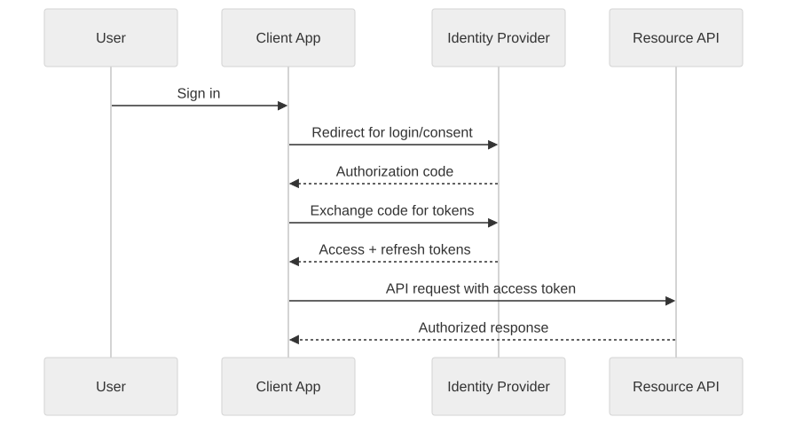

Part Context
Part: Part 6 - Advanced Architecture
Position: Chapter 40 of 60
Why this part exists: This section adds the production-grade concerns that separate a technically functioning system from a trustworthy one.
This chapter builds toward: identity flows, authorization design, token strategy, and secure-by-default architectural thinking
Overview
Security and authentication are foundational system-design concerns because every architecture choice changes the attack surface. Authentication answers “who is this principal?” Authorization answers “what may they do?” Secure system design must also consider transport security, secret management, abuse prevention, and how trust is established between services.
This chapter focuses on architectural clarity rather than implementation trivia. The goal is to help you reason about identity, session models, OAuth-based delegation, JWT trade-offs, and zero-trust thinking in a way that scales from interviews to real production systems.
Why This Matters in Real Systems
- Every public-facing system eventually needs strong answers for identity, session control, and access boundaries.
- Security failures are often architecture failures: unclear trust boundaries, poor secret handling, or over-broad privileges.
- Interviewers use security follow-ups to see whether candidates can protect the system they just designed.
- Authentication and authorization decisions affect latency, scalability, user experience, and compliance obligations.
Core Concepts
Authentication versus authorization
Authentication verifies identity. Authorization decides access. Mixing them conceptually leads to weak designs, such as assuming that a valid token automatically implies permission for all actions.
Session-based and token-based models
Traditional web systems often maintain server-side sessions. APIs and distributed systems often use signed or opaque tokens. Neither is universally better. The right choice depends on revocation needs, infrastructure shape, client type, and trust boundaries.
OAuth and OpenID Connect
OAuth is a delegated authorization framework that lets one system access resources on a user’s behalf. OpenID Connect layers identity on top. Architects should understand the authorization-code flow conceptually because it is the backbone of many modern login and delegation systems.
JWT trade-offs
JWTs are convenient because they are self-contained and verifiable without a central session store, but they complicate revocation, increase token size, and can encourage over-sharing of claims. They are useful tools, not universal defaults.
Defense in depth
Authentication alone is not enough. Real systems need TLS, secret rotation, least privilege, audit logs, rate limiting, abuse detection, and strong service-to-service trust controls.
Key Terminology
| Term | Definition |
|---|---|
| Principal | An authenticated identity such as a user, device, or service. |
| Session | Server-tracked authentication state for a client interaction. |
| Access Token | A credential used to authorize API requests. |
| Refresh Token | A longer-lived credential used to obtain new access tokens. |
| JWT | JSON Web Token, a signed token format that can carry claims. |
| OAuth 2.0 | A framework for delegated authorization. |
| OIDC | OpenID Connect, an identity layer built on top of OAuth 2.0. |
| Least Privilege | The principle of granting only the access required for a task. |
Detailed Explanation
Start from trust boundaries
Before choosing OAuth, JWT, or sessions, identify the principals and boundaries in the system. Is the caller a browser, a mobile app, a backend service, or a partner integration? Which actions require user identity versus service identity? Which data is sensitive? These answers determine where credentials are issued, validated, and scoped.
Choose the right session model for the system shape
Server-side sessions simplify revocation and central control, which is useful for traditional web apps. Token-based approaches fit API ecosystems and horizontally scaled service architectures because request validation can happen without a shared session store. The trade-off is that revocation, rotation, and claim management become more subtle.
Understand delegated authorization flows
In an OAuth-style authorization-code flow, the user authenticates with an identity provider, grants consent, and the client exchanges a code for tokens. This allows applications to avoid handling user passwords directly. Architects should understand this because many products today depend on third-party identity or internal identity providers.
Design authorization as a first-class policy layer
Roles, scopes, resource ownership, and attribute-based rules should be modeled clearly. Authorization logic scattered across controllers and services becomes inconsistent and fragile. A well-designed policy layer keeps access decisions auditable and easier to evolve.
Think beyond login
Security architecture also includes secret storage, key rotation, encrypted transport, CSRF protection where relevant, replay prevention, device trust, audit logging, and suspicious-behavior detection. A login screen is only the visible edge of a deeper trust system.
Diagram / Flow Representation
OAuth Authorization Code Flow

Service Authorization Boundary

Real-World Examples
- Consumer apps commonly use OAuth or OIDC with an identity provider for web and mobile login flows.
- Enterprise platforms often separate user authentication from fine-grained authorization policies for tenants, roles, and resources.
- Service-to-service authentication may rely on mTLS, workload identity, or short-lived tokens rather than user sessions.
- Large systems frequently pair identity providers with WAFs, audit systems, and risk engines for layered protection.
Case Study
Securing a multi-client product platform
Assume a product supports web, mobile, and partner APIs. Users log in through an identity provider, internal services call each other, and data is tenant-scoped. The architecture must support delegated access, token refresh, and least-privilege authorization.
Requirements
- Users can authenticate securely from browser and mobile clients.
- Access tokens should be short-lived and scoped appropriately.
- Authorization rules must consider user role, tenant, and resource ownership.
- Internal services need trustworthy identities for service-to-service calls.
- The platform must support revocation, auditability, and suspicious-activity detection.
Design Evolution
- A simple initial system may use server sessions for one web client and coarse roles.
- As APIs and mobile clients appear, token-based flows and refresh mechanics become necessary.
- As tenancy and partner integrations expand, scopes, policy engines, and delegated access become more sophisticated.
- As compliance needs grow, audit logs, centralized secret management, and stronger service identity controls become mandatory.
Scaling Challenges
- JWT convenience can obscure difficult revocation and claim-freshness questions.
- Authorization logic often spreads across many services and becomes inconsistent.
- Long-lived credentials dramatically increase blast radius when leaked.
- Internal trust is often over-assumed, which becomes dangerous in microservice environments.
Final Architecture
- An identity provider handles login, MFA, and token issuance using OAuth/OIDC-compatible flows.
- Clients use short-lived access tokens plus refresh mechanisms appropriate to their threat model.
- APIs enforce authorization through centralized policy logic using roles, scopes, and ownership checks.
- Internal services authenticate with workload identity or mTLS instead of shared static secrets.
- Audit trails, secret rotation, rate limiting, and anomaly detection complement the authentication system.
Architect's Mindset
- Start from trust boundaries and threat surface, not from a preferred token format.
- Choose token and session patterns that match revocation, client type, and operational complexity.
- Keep authorization explicit, reviewable, and centrally understandable.
- Prefer short-lived credentials and least privilege to reduce blast radius.
- Treat service-to-service trust with the same seriousness as user login.
Common Mistakes
- Using JWTs everywhere without understanding revocation and claim staleness trade-offs.
- Confusing authentication with authorization.
- Embedding sensitive data directly into tokens.
- Relying on long-lived static secrets between services.
- Scattering access-control checks across the codebase with no shared policy model.
Interview Angle
- Interviewers often ask security as a follow-up to any public system design.
- Strong answers cover authentication model, authorization boundaries, token/session trade-offs, and service trust.
- Candidates stand out when they mention least privilege, secret rotation, and auditable policy enforcement.
- Weak answers reduce security to “use HTTPS and JWT” with no trust-boundary reasoning.
Quick Recap
- Security architecture starts with clear trust boundaries.
- Authentication proves identity; authorization decides access.
- OAuth/OIDC solve delegated access and modern login patterns, but they must be applied thoughtfully.
- JWTs are useful but come with revocation and claim-management trade-offs.
- Defense in depth requires identity, transport security, policy, auditing, and operational controls together.
Practice Questions
- What is the difference between authentication and authorization?
- When would you choose server sessions over JWT-based access tokens?
- Why are short-lived tokens generally safer than long-lived tokens?
- What does OAuth solve that simple username-password login does not?
- How would you revoke access quickly in a token-based system?
- Why should internal services have their own identities?
- What risks appear when authorization logic is duplicated across services?
- How would you model tenant-aware authorization?
- Why is least privilege important in both user and service contexts?
- What telemetry would you want from an authentication platform?
Further Exploration
- Study threat modeling, key management, and application security controls to extend this chapter.
- Connect these ideas with API gateways, service meshes, and audit systems in production environments.
- Practice adding authentication and authorization layers to earlier chapter designs.
Navigation
- Previous: Kubernetes & DevOps
- Next: Cost Optimization